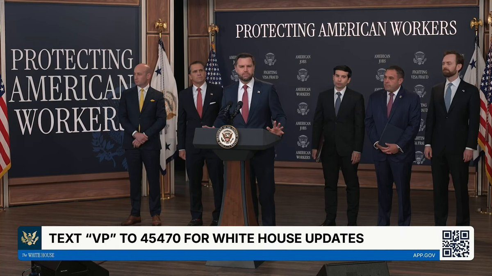
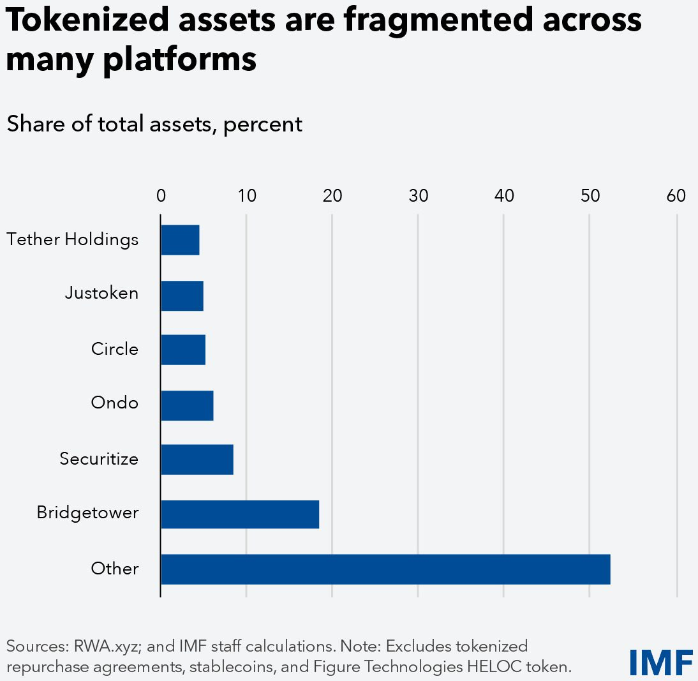
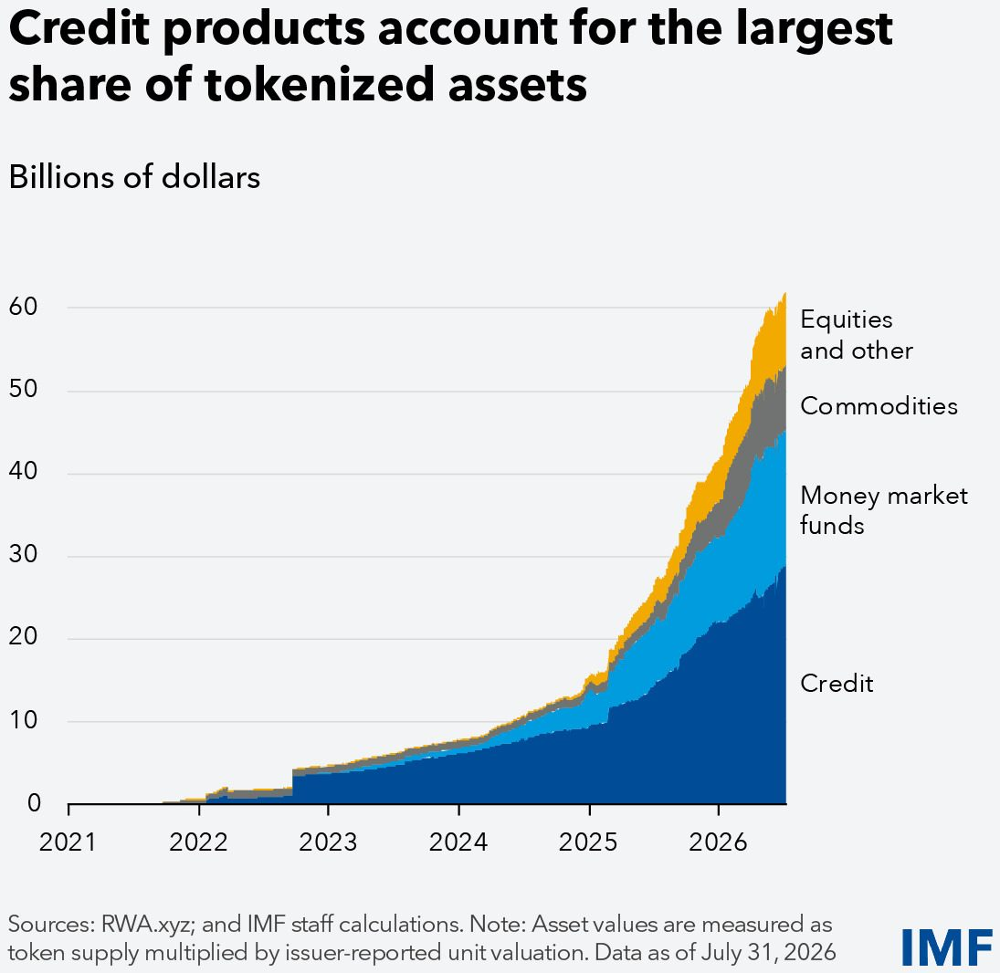
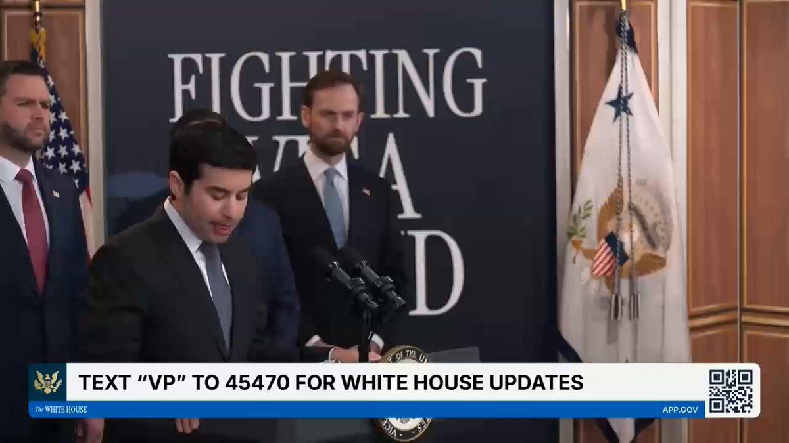
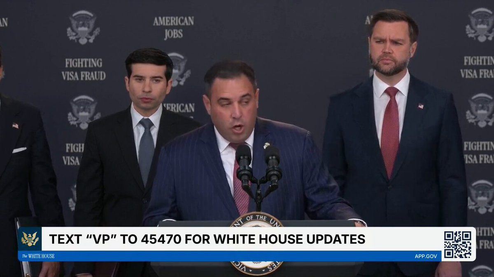
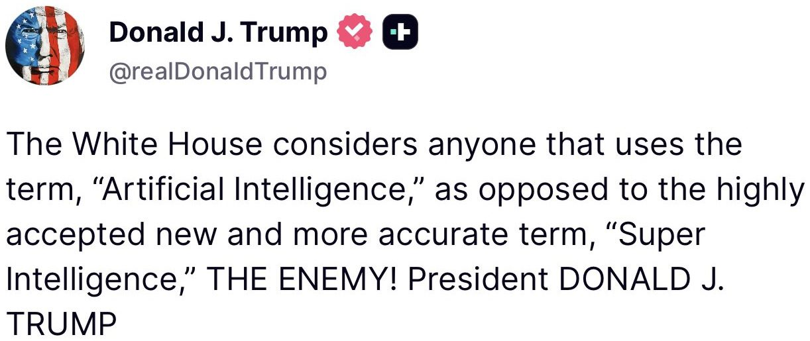
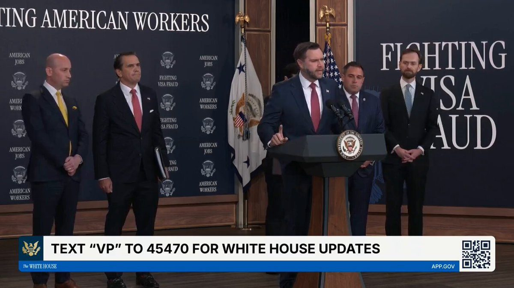

▶ Watch on X🚨 BREAKING: VP JD Vance, flanked by Stephen Miller and AG Blanche, just walked out and announced a HISTORIC CRACKDOWN on H-1B and foreign visa fraud — SPECIFICALLY exposing Microsoft for laying off 6,000 US workers, despite hiring 6,300 H1B visas and 3,000 green cards WOW! VANCE: "NO company has abused this more than Microsoft." "H1B is how they get in...a PERM program is how they STAY. After a couple cycles of H1B, companies apply for a PERM to let them stay indefinitely." This is huge! The PERM program is being suspended for Microsoft. The days of taking advantage of Americans are OVER!!
Introducing Ondo Private Markets.
Tokenized exposure to industry-defining private companies, with 24/7 trading.
The first market is now live.
As leading companies stay private longer, retail investors miss out on some of the largest wealth-creation opportunities. Even with access, investors may have to wait years to sell.
Ondo Private Markets changes that, giving eligible investors exposure to leading companies before they go public.
Investors can trade permissionlessly on a secondary order book 24/7, entering, exiting, or adjusting their exposure before an IPO.
Starting with AI, Ondo Private Markets offers exposure to leading companies in robotics, cybersecurity, biotech, infrastructure, and more.
The first market is just the beginning. Ondo is building toward the broadest selection of private-company exposures onchain and the most liquid market for trading them.
Today, we’re proud to announce the launch of Securitize Stocks, bringing some of the world’s most widely held U.S. equities onchain for eligible investors in the United States, European Union (EU) and other permitted jurisdictions worldwide.
The initial offering on Securitize will include security entitlements to shares of AAPL, MSFT, NVDA, GOOG, TSLA, META, AMZN, NFLX, CRCL, SPCX, MSTR and PLTR. Securitize Stocks will initially launch on @Solana and trade on Securitize’s registered broker-dealer platform.
Securitize Stocks are also expected to trade on the new 24/7 digital trading venue being developed by the New York Stock Exchange (@NYSE), subject to the venue’s launch and applicable regulatory and operational requirements.
Unlike products that primarily provide economic exposure to a stock’s price, Securitize Stocks are backed 1:1 by underlying shares, structured to preserve the investor rights and economic benefits associated with those shares, and convertible, where available, to direct ownership on the books of the issuer’s transfer agent.
Tokenization could change how people and institutions buy, sell, and use financial assets, but legal, regulatory, and infrastructure barriers remain. As markets grow, policymakers will need to manage new channels of financial risk. Watch the launch event: https://www.imf.org/en/publications/gfsr/issues/2026/10/13/global-financial-stability-report-october-2026?cid=sm-com-x-am26-GFSREA2026002
More than half of trading in tokenized equities takes place outside regular market hours. The demand for 24/7 access is real. The challenge is building markets that are also deep, liquid, and resilient. Learn more in our GFSR chapter on tokenization: https://www.imf.org/en/publications/gfsr/issues/2026/10/13/global-financial-stability-report-october-2026?cid=sm-com-x-am26-GFSREA2026002

Tokenized assets have grown rapidly, reaching roughly $65b. Yet they remain tiny compared with traditional capital markets’ $300t in assets. Our new GFSR explores the policy and market conditions needed for tokenization to scale safely: https://www.imf.org/en/blogs/articles/2026/10/08/blog-what-is-needed-for-tokenization-to-deliver

BREAKING: Samsung partners with Solana to bring stablecoins to 82 million US Galaxy devices.
Samsung Wallet users in the US will be able to send money across borders using USDC on Solana, beginning the last week of October.
▶ Watch on XJUST IN: 🇸🇬 Banking giant Standard Chartered to launch crypto custody services for institutional clients in Singapore.
Securitize Launches Tokenized Stock Trading for U.S. Investors https://t.co/HCUgEZdA0h via @wsj
EXCLUSIVE: Solana's Orca merges with Loopscale in push to finance AI, robotics and defense
We announced an agreement to acquire a nationwide low-band spectrum license portfolio that will pave the way for @Starlink to become a major mobile carrier in the US.
With this new spectrum and our Gen2 constellation, Starlink Mobile can ensure Americans have access to high-speed mobile broadband no matter where they are →
An astrophysicist worked with Claude Science to create the first complete ultraviolet map of the sky. Astronomers have already created complete sky maps from radio to gamma rays. But large regions of the sky have never been observed in UV.
In today’s science blog, Brice Ménard explains how he guided Claude to find existing datasets, combine them, and fill in the gaps with statistical inference. The work would have taken humans weeks of work, but, with Claude, just took a few days while Ménard worked on other projects.
The resulting map is a useful teaching tool and an example of exactly the sort of slow, low-priority work which scientists never quite get around to, but which AI now makes feasible.
🚨NEW EXPERIMENT 🚨
Playground is an experimental gaming platform that lets you create your own games with zero coding experience. If you can think it, you can play it.
Go to https://t.co/fRUukpuoqM to learn more! Available to users 18+ in the US.
▶ Watch on XToday is historic
MPA-approved trailer for first AI film with a traditional theatrical run
Gods Don't Give Gifts is R-Rated
Submitting for Best Animated Feature Oscar
--> Variety article @Gossip_Goblin @fableshowrunner
▶ Watch on XTech firms pledge $2.4B in computing power to Trump’s Genesis Mission
.@Sonderling47: "I am hereby suspending from the Permanent Labor Certification Program some of the largest IT outsourcing firms in the world — Cognizant, Infosys, Tata, Wipro, HCL, and Capgemini — and also, due to multiple active federal investigations, @USDOL is suspending Microsoft and Adobe from the program."

▶ Watch on X🚨@USLaborIG: “I don’t care how prestigious a university thinks it is, break the law and screw the American people, and I will personally cuff you in the university square.”
@DOLOIG just launched a MASSIVE J-1 visa investigation. The cuffs are coming.

▶ Watch on X#BREAKING: U.S. suspends Microsoft’s PERM program; JD Vance says “you’ve got to hire American workers.”
#BREAKING: The DOJ is using fraud laws to crack down on birth tourism, Blanche says.
🚨 BREAKING: A JAW-DROPPING RAID has just been carried out by federal agents on Skid Row in CA — after MASS fentanyl and meth dealing to people who receive TAXPAYER WELFARE
FBI, DEA, US Attorneys and LA police are involved 👏🏻
4 MONTH OPERATION. Arrests are happing RIGHT NOW
44 search warrants across LA County, 28 people being charged, 14 already in custody
They went after the dealers pushing fentanyl and PCP on some of the most vulnerable people in America!
Skid Row has been an open-air 3RD WORLD drug market for YEARS while California Democrats looked the other way.
LAW AND ORDER IS HERE!!
@MattFinnFNC
Feds bust massive Skid Row criminal network in series of raids - as 100-strong convoy storms America's filthiest neighborhood https://t.co/hTuLQqdzTa
OPERATION BLACKOUT
This FBI’s historic, first of its kind global campaign to destroy scammers who target Americans and ruin lives.
-Roughly $17 BILLION seized -Hundreds of alleged scammers arrested -Thousands of trafficked workers freed -10,000+ Americans warned before losing their money -$660 MILLION in estimated losses prevented
This @FBI is blowing up scam compounds and saving American citizens hundreds of millions of dollars.
And when these networks move—from Southeast Asia to the Middle East to Africa—we move with them.
JUST IN: Minnesota law enforcement calls for a regional gang task force amid a surge in gun violence tied to Somali gangs.
.@USComptroller: @SecScottBessent has made clear that @USTreasury always follows the money, and criminals who seek to exploit the U.S. financial system or prey on American families and taxpayers will suffer severe consequences. In January, Treasury announced numerous actions to thwart fraud and illicit finance in Minnesota’s Twin Cities, including launching ongoing investigations and a geographic targeting order. Additionally, Treasury’s Do Not Pay program has seen tremendous success in record time. This critical tool to prevent fraud and improper payments to better protect taxpayer dollars has seen a twentyfold increase in the last fiscal year alone. The Trump Administration has made clear there is no tolerance for waste, fraud, and abuse – and @USOCC is proud to support this whole-of-government effort.

Vice President JD Vance on J-1 Visa fraud in Universities:
"This is where some of America’s most elite universities bring in foreigners again, to undercut the wages of American residents. Now there are nine universities in particular that we believe merit an investigation. Those universities are Harvard, Yale, Stanford, Brown, the University of Pittsburgh, UC Davis, Caltech, Arizona State, and MIT."

▶ Watch on X#BREAKING: Trump admin opens investigations into Harvard, Yale, MIT and 6 more over visa fraud.
A superseding indictment was just unsealed charging Nicolás Maduro and his wife Cilia Flores with conspiracy to commit torture, including the alleged torture of United States citizens for over two decades, in addition to the narcotics trafficking and weapons offenses already charged.
Since their capture and arrest, @TheJusticeDept has been working to uncover the extent of their alleged crimes against the people of Venezuela and of the United States, and these additional charges reflect the dedication of this Administration to delivering justice for the victims of torture, narcoterrorism, and organized crime.
This will sound super crazy, but I see a path to SpaceX being worth orders of magnitude more than the current Earth economy